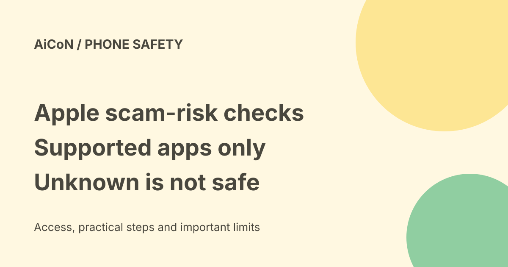

Apple Impersonation Risk Detection: supported apps, settings and limits
Impersonation Risk Detection helps supported iPhone and iPad apps assess signs of an active scam before a payment or sensitive account change. It returns a risk level. The app decides what to do, and an Unknown result does not mean the action is safe.

What problem does it address?
A scammer may pretend to be your bank, a government office or someone you trust, then pressure you into paying or changing account details. Apple says ordinary measures such as two-factor authentication cannot always detect this: you are taking the action yourself, though someone has tricked you.
The feature analyses signs related to your device and Apple Account. A supported app can request an assessment for a risky action, such as a payment or password change. This is not a general scanner for every call or message, and it does not replace checking the person or organisation independently.
Requirements and three risk levels
Apple's Support page says the feature starts with iOS 27 and iPadOS 27 and works only in apps that support it. Installing a supported system version does not make every bank or payment app use the feature. We did not verify a list of Indian participating apps.
- Unknown: no evidence of suspicious activity was detected. Apple explicitly says this is not confirmation of safety.
- Medium: some signs of suspicious activity were detected.
- High: significant signs were detected.
The app gets only the risk level, not the underlying information. The app may show a warning, require verification or introduce a delay. Apple does not determine or control the action that the app takes. A risk signal is a check, not an automatic guarantee that a transaction will be stopped.
Turn it on
- On the intended iPhone or iPad, open Settings.
- Open Privacy & Security.
- Scroll to Impersonation Risk Detection.
- Review and turn on Share with App Developers if you want supported apps to use it.
Apple says you may need to sign into the App Store with your Apple Account. We did not change any device setting or test the interface. If the option is absent, check your system version and Apple's current help rather than installing an unofficial profile or app.
Check individual app access
In the feature's settings, Recent Activity shows which apps requested an assessment. Reasons for Access explains the actions that prompted requests. You can open an app's entry and change its individual access.
Apple says changes to the overall setting and individual-app settings may take up to 24 hours to take effect. Do not assume a toggle change instantly changes every assessment. Apple warns that someone directing you to turn this off may be trying to scam you.
Privacy: what Apple says
Apple says interaction patterns, timing, context and basic sensor data are analysed on-device and it never receives the underlying data used to generate the risk level. It says it does not analyse the content of Photos, Messages or Mail.
Apple does learn the type of action attempted when an app asks for an assessment. Apps receive the risk level. This is Apple's stated behavior, not an independent privacy audit, and it is not the same as "no information is shared with anyone." Review the app's own policies for what it already knows about your payment or account.
India and costs
This is an operating-system feature, not a separately advertised paid security subscription. We did not verify device-upgrade eligibility, Indian app adoption or region-specific visibility in a live account. Check your device and app before relying on it. Never pay someone to enable a system safety switch or share your account code with them.
Frequently asked questions
Does it protect every app?
No. The app must support it.
Does Unknown mean safe?
No. It means no evidence was detected in that assessment.
Does Apple read my messages?
The cited page says this feature does not analyse Messages, Mail or Photos content.
Should I turn it off during a bank call?
A caller pressuring you to disable it is itself a warning sign. Stop and contact the bank through a trusted route.
What changed since the earlier post?
This guide retains the official iOS 27/iPadOS 27 and supported-app requirements. It adds the exact Unknown meaning, app-controlled response, on-device privacy details, action-type information Apple learns and up-to 24-hour setting delays. No installation or app compatibility test was performed.
Sources: Apple Support. Checked 8 October 2026.